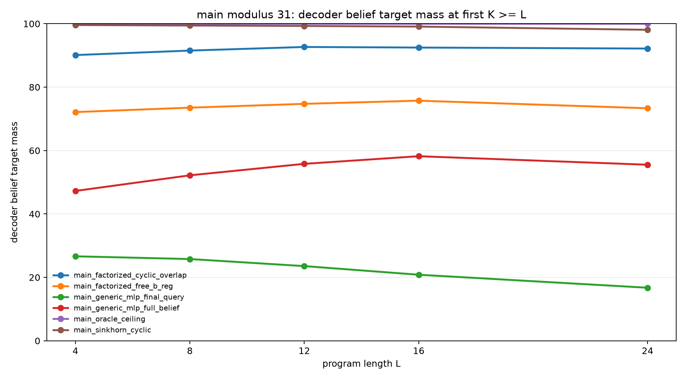
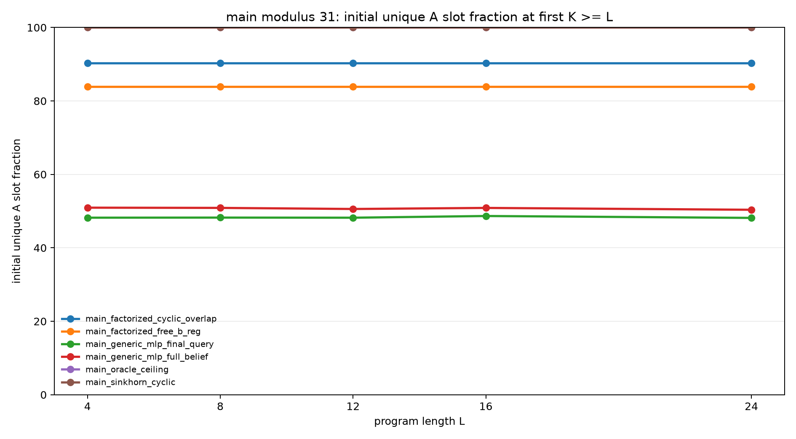
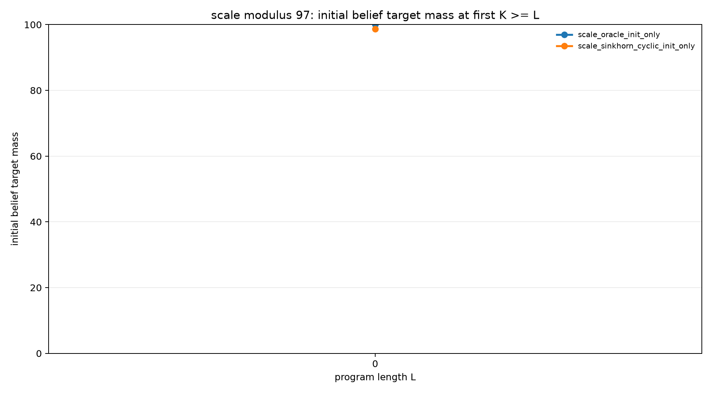

Structured Slot Initialization for Modular Belief Execution
Abstract
This experiment studies a narrow failure mode in recurrent slot execution: forming the initial sparse belief support. Each example begins with an unknown register A and a known modular relation B=A+d (mod p). A slot model must place that support into weighted slots, then an exact recurrent transition executes arithmetic and observation programs. Because the transition is exact, final errors isolate initializer quality.
At modulus 31 with held-out program length 24, a generic MLP initializer reaches 55.5% strict final belief mass under full-belief supervision. A free-B factorized initializer reaches 73.3%. A cyclic initializer with soft overlap regularization reaches 92.2% but leaves some residues duplicated. Replacing the soft overlap penalty with Sinkhorn-normalized slot assignment reaches 98.1% strict final belief mass and 98.6% query mass, with 100% measured slot coverage. An initializer-only modulus-97 scale check reaches 98.7% strict initial belief mass.
Task
Each example starts from the support:
{(A, B): B = A + d (mod p)}
Programs apply modular register updates and observation filters over A and B. Evaluation reports strict probability mass on the exact final (A,B) support at the first evaluated K >= L, where L is program length.
Initializers
oracle: exact slot support, used as a ceiling.generic_mlp: delta and slot-id embeddings passed through an MLP.factorized_free_b: learned slot-to-Alogits, with a free delta-conditioned MLP forB.factorized_cyclic: learned slot-to-Alogits, withBproduced by the exact cyclic shiftA+d.sinkhorn_cyclic: learned slot-to-Alogits normalized by Sinkhorn iterations, then shifted bydto produceB.
Main Result
Modulus 31, training lengths 1-8, evaluation lengths 4, 8, 12, 16, and 24:
| Initializer | L=24 query mass | L=24 belief mass | Initial belief | Relation acc | Unique A slots |
|---|---|---|---|---|---|
| oracle | 100.0% | 100.0% | 100.0% | 100.0% | 100.0% |
| sinkhorn_cyclic | 98.6% | 98.1% | 99.7% | 100.0% | 100.0% |
| factorized_cyclic | 93.6% | 92.2% | 90.0% | 100.0% | 90.3% |
| factorized_free_b | 78.9% | 73.3% | 74.2% | 89.0% | 83.9% |
| generic_mlp, full belief | 62.8% | 55.5% | 46.4% | 84.5% | 50.4% |
| generic_mlp, final query | 30.5% | 16.7% | 29.4% | 52.6% | 48.2% |
The generic MLP does not reliably form the sparse support at modulus 31. The successful ingredient is a coverage-aware assignment mechanism: Sinkhorn normalization supplies the missing constraint that each slot should choose a residue and each residue should receive a slot.


Scale Check
The modulus-97 check isolates initialization at K=0; it does not execute full p=97 programs.
| Initializer | Initial query mass | Initial belief mass | Relation acc | Unique A slots |
|---|---|---|---|---|
| oracle | 100.0% | 100.0% | 100.0% | 100.0% |
| sinkhorn_cyclic | 99.7% | 98.7% | 100.0% | 100.0% |

Limitations
The recurrent transition is exact by construction, so this experiment does not claim that a neural transition and a learned initializer jointly solve the full problem. The modulus-97 row is initializer-only, not full program execution. The Sinkhorn initializer also uses strong structure: it assumes one slot per residue and hard-wires the cyclic relation.
Conclusion
For modular sparse belief execution, the most important initializer structure is not a larger MLP. It is a constrained assignment from slots to residues plus the exact cyclic relation. Under that structure, a learned initializer reaches near-oracle final execution at modulus 31 and forms near-exact initial support at modulus 97.